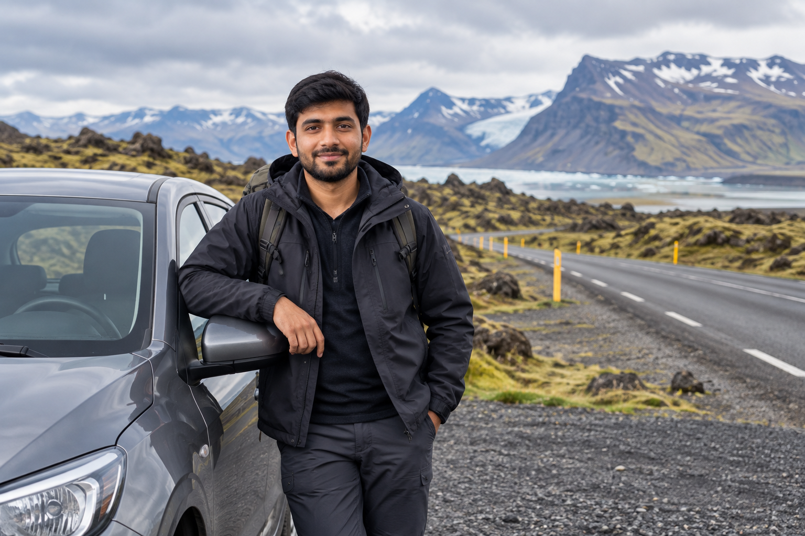
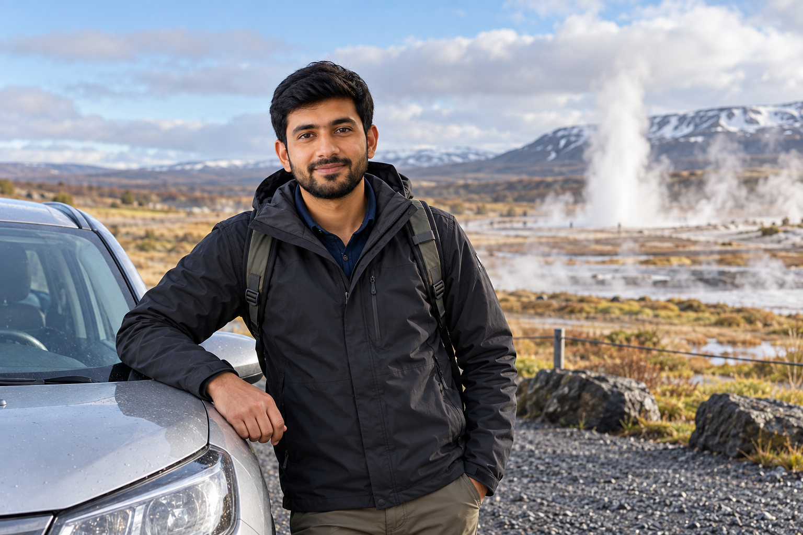
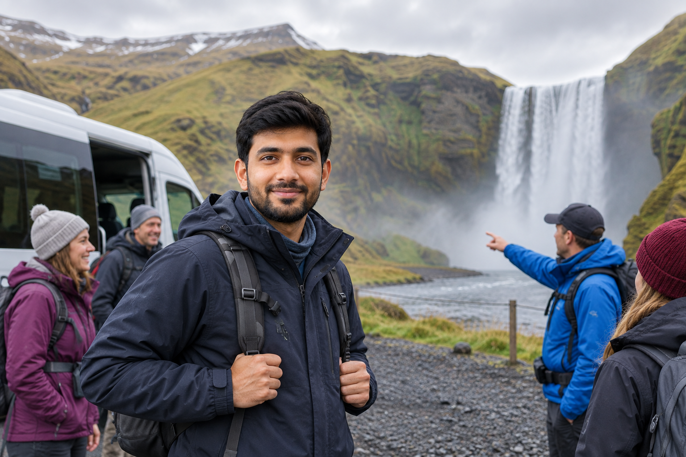

How to Get Around Iceland: Car, Bus, Tours and Domestic Flights
Getting around Iceland is different from traveling in a country with a large railway network or frequent intercity public transport. There are no passenger trains connecting Iceland's regions. Instead, most visitors choose between a rental car, scheduled buses, organized tours, domestic flights, or a combination of these options.
For many first-time visitors, a rental car offers the most freedom. But driving is not automatically the best choice for everyone. A Reykjavík-based traveler may be better off using airport transfers and guided day tours, while someone traveling between Reykjavík and Akureyri or Egilsstaðir may find a domestic flight far more practical than spending most of a day on the road.
The best transport option depends on where you want to go, your season, trip length, driving confidence, budget, and how much flexibility you need. This guide compares the main ways to travel around Iceland so you can build the trip around the right transport rather than trying to force every itinerary into a road trip.
How Do Most Visitors Get Around Iceland?

There are four main options:
- ✓Rental car
- ✓Public bus
- ✓Organized tour
- ✓Domestic flight
You may also use:
- ✓Airport coaches
- ✓Taxis
- ✓Ferries
- ✓Private transfers
for specific parts of the trip.
There is no single transport method that works best for every Iceland itinerary.
Iceland Transport Options at a Glance
| Transport | Best For | Main Advantage | Main Limitation |
|---|---|---|---|
| Rental car | Road trips, South Coast, Ring Road | Maximum flexibility | Weather and driving responsibility |
| Public bus | Town-to-town travel, budget trips | No driving required | Limited attraction access |
| Guided tours | Reykjavík-based sightseeing, winter trips | Easy logistics | Fixed schedules |
| Domestic flights | Long regional transfers | Saves substantial time | Does not solve local transport after landing |
| Airport coach | KEF–Reykjavík | Simple airport transfer | Only solves airport transport |
| Taxi/private transfer | Door-to-door journeys | Convenience | Usually more expensive |
For many travelers, the strongest solution is actually:
a combination.
For example:
airport coach → Reykjavík → guided tours
or:
domestic flight → local rental car
can sometimes make more sense than renting one car for the entire trip.
First Understand Iceland's Two Reykjavík Airports
This is important because first-time visitors often confuse them.
Keflavík International Airport — KEF
KEF is Iceland's main international airport.
Most overseas visitors arrive here.
It is located about:
50 km / 31 miles from Reykjavík.
It is not the same airport as Reykjavík Domestic Airport.
From KEF, you can reach Reykjavík by:
- ✓Airport coach
- ✓Public bus
- ✓Taxi
- ✓Private transfer
- ✓Rental car
Reykjavík Domestic Airport — RKV
RKV is close to central Reykjavík.
It is the main hub for domestic flights within Iceland.
Current domestic destinations include places such as:
- ✓Akureyri
- ✓Egilsstaðir
- ✓Höfn
- ✓Ísafjörður
So if your itinerary says:
fly from Reykjavík to Akureyri
do not automatically go back to KEF.
The domestic flight will generally use:
RKV.
Why This Matters
Imagine you:
- ✓Arrive internationally at KEF
- ✓Stay in Reykjavík
- ✓Fly to Akureyri two days later
Those are two different airports.
You first travel:
KEF → Reykjavík
and later:
central Reykjavík → RKV
for the domestic flight.
Understanding this before booking prevents unnecessary airport confusion.
Option 1: Renting a Car in Iceland

For most travelers building a multi-region Iceland trip, a rental car provides the greatest flexibility.
A car works especially well for:
- ✓Golden Circle
- ✓South Coast
- ✓Snæfellsnes
- ✓Ring Road
- ✓Rural accommodation
- ✓Photography trips
- ✓Family trips
It lets you choose:
- ✓When to leave
- ✓How long to stay
- ✓Where to eat
- ✓Which optional stops to skip
That freedom matters because Iceland's attractions are often spread across rural areas rather than concentrated inside towns.
When a Rental Car Makes the Most Sense
I would strongly consider self-driving when your itinerary includes:
Multiple Rural Regions
For example:
Golden Circle → South Coast → Jökulsárlón
or:
full Ring Road.
Frequent Accommodation Changes
A car makes it much easier to travel with luggage between:
- ✓Guesthouses
- ✓Rural hotels
- ✓Towns
Flexible Photography Stops
You may want to:
- ✓Leave early
- ✓Stay longer
- ✓Wait for weather
A scheduled bus or tour cannot provide the same freedom.
Two or More Travelers
Once multiple people share:
- ✓Rental cost
- ✓Fuel
self-drive can become more financially competitive with repeated tours.
When You May Not Need a Rental Car
Do not rent one automatically.
A car may be unnecessary if your trip is:
- ✓Mostly Reykjavík
- ✓Two or three guided day trips
- ✓A short stopover
- ✓Winter travel when you do not want to drive
For example, a traveler spending:
3 nights in Reykjavík
could use:
- ✓KEF airport coach
- ✓Golden Circle tour
- ✓South Coast tour
and never need to drive.
That can be much simpler.
Do You Need a Car in Reykjavík?
Usually not for normal central sightseeing.
Central Reykjavík is compact enough to explore much of it:
on foot.
City buses can cover longer distances within the capital area.
A rental car can actually create extra work because you need to consider:
- ✓Parking
- ✓One-way streets
- ✓Hotel parking
- ✓Rental cost
If you are spending your first full day only in Reykjavík, you may not need the car until you leave the city.
Airport Rental vs Reykjavík Rental
You have two main approaches.
Collect the Car at KEF
This is convenient when:
- ✓You begin the road trip immediately
- ✓You are staying outside Reykjavík
- ✓You want one rental for the whole trip
You avoid paying for a separate airport transfer.
Collect the Car in Reykjavík
This may work better if:
- ✓You spend the first day or two in the city
- ✓You do not need a car in Reykjavík
- ✓Hotel parking is inconvenient
You can use an airport transfer first, then collect a vehicle when the road trip begins.
Compare the Full Cost
Do not compare only:
daily rental rate.
Compare:
- ✓Airport transfer
- ✓Rental days
- ✓Parking
- ✓Pickup/drop-off location
Sometimes keeping the car one extra day is cheaper and simpler.
Sometimes it is unnecessary.
Is Self-Driving the Best Way to See the Golden Circle?
For travelers comfortable driving:
it is one of the easiest routes to self-drive.
The major sights are spread across the countryside, and a car lets you decide how much time to spend at:
- ✓Þingvellir
- ✓Geysir
- ✓Gullfoss
You can also choose whether to add:
- ✓Kerið
- ✓Geothermal bathing
- ✓Smaller stops
However, a Golden Circle tour works extremely well for visitors who:
- ✓Do not want to drive
- ✓Visit in winter
- ✓Have only one sightseeing day
Neither option is automatically superior.
Is a Car Best for the South Coast?
For a multi-day South Coast route:
usually yes.
A car makes it much easier to travel progressively through:
- ✓Seljalandsfoss
- ✓Skógafoss
- ✓Vík
- ✓Skaftafell
- ✓Jökulsárlón
and stay in different locations.
Public buses may connect towns along parts of the South Coast, but they do not function like a hop-on/hop-off sightseeing system for every waterfall and viewpoint.
That distinction matters.
A bus can get you:
from one community to another.
A car can help you build:
a sightseeing route between them.
Is a Car Necessary for the Ring Road?
For a first independent Ring Road trip:
it is generally the most practical transport.
Route 1 connects most major regions around Iceland, but the places you want to visit may sit:
- ✓Off the main road
- ✓Between towns
- ✓Away from bus stops
Self-driving gives you the flexibility needed for:
- ✓South Coast
- ✓Eastfjords
- ✓Mývatn
- ✓North Iceland
- ✓West Iceland
If you are planning this route, see Iceland 10-Day Itinerary: First-Time Ring Road Trip for a realistic example of how the driving days fit together.
Do You Need a 4WD?
Not automatically.
A normal Iceland trip does not always require:
4WD.
Vehicle choice should depend on:
- ✓Season
- ✓Roads
- ✓Exact route
- ✓Rental restrictions
For normal paved sightseeing routes in favorable conditions, a standard vehicle may be enough.
But winter, snow, rough roads, or specific routes can change the decision.
2WD vs 4WD Is Not the Same as Safe vs Unsafe
This is an important distinction.
A 4WD vehicle does not make:
- ✓Bad weather safe
- ✓Closed roads open
- ✓Dangerous driving acceptable
It can provide different:
- ✓Traction
- ✓Clearance
- ✓Capability
but the driver still needs to respond to conditions.
Likewise, renting the largest SUV available does not mean you can drive every Icelandic road.
What About F-Roads?
F-roads are Highland roads.
They are not required for:
- ✓Golden Circle
- ✓Standard South Coast
- ✓Normal Ring Road
Many F-roads require:
4WD vehicles.
Some are much more demanding than others.
Access is also seasonal.
If your first trip focuses on Iceland's major road-trip regions, you can have an excellent trip without using an F-road at all.
Do Not Choose the Car Before Choosing the Route
Use this order:
- ✓Choose season
- ✓Choose regions
- ✓Check road types
- ✓Select vehicle
Not:
book the cheapest car → decide later where it can go.
This avoids discovering after payment that your planned road is unsuitable for:
- ✓Vehicle
- ✓Rental terms
Driving Gives Freedom, but It Adds Responsibility
When you self-drive, you become responsible for checking:
- ✓Weather
- ✓Road conditions
- ✓Closures
- ✓Fuel
- ✓Parking
- ✓Driver fatigue
This is the main trade-off.
A tour passenger can:
- ✓Sit back
- ✓Listen to the guide
- ✓Let someone else drive
A self-driver gains freedom but must manage the route.
Weather Can Change the Value of Self-Driving
During favorable summer conditions, driving can feel:
- ✓Simple
- ✓Flexible
- ✓Enjoyable
During difficult winter conditions, the same route can become:
- ✓Slower
- ✓More stressful
- ✓Less predictable
That means the best transportation method can change with the season.
A traveler who loves self-driving in July may sensibly choose tours in January.
Check Conditions Every Driving Day
Do not build a 10-day road trip and assume every day's route will remain available exactly as planned.
Use current:
- ✓Weather information
- ✓Official road information
- ✓Safety alerts
before departure each morning.
Your transport plan needs flexibility.
What Are the Main Downsides of Renting a Car?
Self-driving is not perfect.
Consider these disadvantages.
Cost
You may pay for:
- ✓Rental
- ✓Insurance
- ✓Fuel
- ✓Parking
- ✓Tolls
Driving Fatigue
Long road days become tiring.
Weather Responsibility
You decide whether conditions support the route.
Parking
Popular sights can have:
- ✓Paid parking
- ✓Busy parking areas
Rental Rules
You need to understand:
- ✓Vehicle restrictions
- ✓Damage coverage
- ✓Allowed roads
For travelers who do not want to manage those issues, a tour can be better.
Option 2: Public Buses in Iceland
Iceland does have public buses outside Reykjavík.
But visitors need realistic expectations.
The rural bus network is primarily a:
transport system between communities.
It is not designed specifically as a tourist sightseeing network.
That means buses can be useful for:
- ✓Reykjavík to another town
- ✓Airport transport
- ✓Regional connections
- ✓Travelers who do not drive
but much less useful for visiting several remote attractions in one day.
Strætó in Reykjavík
Strætó operates Reykjavík's public bus network.
It can be useful when your accommodation or destination is too far for a convenient walk.
For normal central tourism, you may still walk much of the time.
Use city buses for places such as:
- ✓Outer neighborhoods
- ✓Swimming pools
- ✓Longer city trips
rather than thinking you need a bus between every central landmark.
Rural Strætó Buses
Strætó also provides passenger information for regional bus services.
The rural network changed significantly from:
January 1, 2026.
Current routes include useful connections in:
- ✓South Iceland
- ✓West Iceland
- ✓North Iceland
- ✓Southern Peninsula
This is important because older travel articles may show outdated:
- ✓Route numbers
- ✓Timetables
- ✓Connections
Always use the current schedule.
Examples of Current Regional Routes
The current network includes routes such as:
Route 52
Höfn ↔ Reykjavík
serving the South Iceland corridor.
Route 57
Akureyri ↔ Reykjavík
across western/northern Iceland.
Route 50
Akranes/Borgarnes ↔ Reykjavík
Route 58
Stykkishólmur ↔ Borgarnes
Route 55
Keflavík Airport ↔ Reykjavík area
These connections can be very useful.
But they do not automatically create a practical multi-stop sightseeing itinerary.
Can You Travel the South Coast by Public Bus?
Parts of it:
yes.
The current regional network includes a Reykjavík–Höfn corridor.
However, there is a major difference between:
traveling to Vík
and:
sightseeing through the South Coast.
A bus timetable may not allow you to conveniently stop for:
- ✓Seljalandsfoss
- ✓Skógafoss
- ✓Reynisfjara
- ✓Several smaller attractions
and then continue whenever you want.
For that type of day:
- ✓Rental car
- ✓Organized tour
is usually more practical.
Can You Travel the Ring Road by Public Bus?
You can connect a number of towns by bus.
That does not mean a public-bus Ring Road works like a car-based Ring Road.
Challenges include:
- ✓Limited departures
- ✓Required connections
- ✓Seasonal timetable changes
- ✓Attractions away from stops
- ✓Accommodation coordination
A determined traveler can build a bus-based trip between communities.
But if your goal is:
the classic sightseeing Ring Road
a car or organized multi-day tour is generally easier.
Buses Work Better for Point-to-Point Travel
This is where public transport becomes much more useful.
For example:
Reykjavík → Akureyri
A regional bus can make sense if you simply need to reach Akureyri.
Reykjavík → Borgarnes
Very practical for a town-to-town journey.
Borgarnes → Stykkishólmur
Useful if those towns are your destinations.
The bus becomes less suitable when your question changes from:
“How do I reach this town?”
to:
“How do I visit six natural attractions between these towns?”
Do Rural Buses Run Frequently?
Not like urban metro systems.
Some rural routes may have relatively limited departures.
Schedules can also vary by:
- ✓Day of week
- ✓Season
- ✓Holidays
That means you should plan:
around the timetable
rather than expecting to arrive at a stop and wait a few minutes.
2026 Bus Network Changes Matter
Iceland introduced a changed countryside route system from:
January 1, 2026.
The changes included:
- ✓New route structure
- ✓New route numbers
- ✓More reliable timetables
- ✓Additional service on some corridors
- ✓Improved regional connections
There were further timetable adjustments during 2026.
This is exactly why an old blog screenshot should not be your transport plan.
Check the live timetable close to travel.
Can You Book Rural Strætó Buses in Advance?
For normal countryside services, current Strætó guidance says passengers generally:
cannot prebook standard trips.
There are exceptions for specific pre-order services.
This is another difference from:
- ✓Tours
- ✓Flights
where you normally reserve a specific place.
How Do You Pay on Rural Buses?
Current countryside guidance allows passengers to pay on board with:
- ✓Debit card
- ✓Credit card
- ✓Cash
Country-specific bus cards may also be available.
This differs from some Reykjavík city ticketing arrangements.
Check the current ticket information before travel rather than assuming one system covers every bus in Iceland.
Can You Use the Klappið App for Rural Buses?
Strætó currently allows travelers to use the app for features such as:
- ✓Planning journeys
- ✓Monitoring buses on a real-time map
But current countryside guidance states that regional bus services are not part of the Klapp ticketing system.
That distinction can confuse first-time visitors.
Use the app for:
- ✓Information
- ✓Tracking
but verify how you actually pay for the rural route.
Can You Bring Luggage?
Regional buses are designed for intercity travel, so luggage can be accommodated subject to operator rules and available space.
If you are carrying:
- ✓Large suitcase
- ✓Bicycle
- ✓Special equipment
check the relevant route rules before departure.
Do not assume airline-style baggage allowances.
Public Bus Advantages
Buses can be a strong choice when you want:
Lower Driving Stress
You do not need to manage:
- ✓Weather behind the wheel
- ✓Parking
- ✓Fuel
Point-to-Point Travel
Particularly between established towns.
Budget Travel
Certain routes may cost less than:
- ✓Rental car
- ✓Private transfer
especially for solo travelers.
Local Travel
They can work well when your destination itself is:
- ✓Akureyri
- ✓Borgarnes
- ✓Vík
- ✓Another serviced town
Public Bus Limitations
The major weaknesses are:
Limited Frequency
You need to respect fixed departure times.
Poor Sightseeing Flexibility
Many natural attractions are not practical bus stops.
Seasonal Variation
Schedules can change.
Connection Risk
One delayed connection can affect a multi-stage day.
Luggage Logistics
You carry everything between services and accommodation.
This makes bus travel more suitable for some itineraries than others.
Who Should Consider a Bus-Based Iceland Trip?
It can work well for:
- ✓Solo travelers
- ✓Students
- ✓Budget travelers
- ✓Visitors uncomfortable driving
- ✓Travelers staying several nights in each town
- ✓Slow travel
It is less suited to travelers who want:
- ✓Fast multi-region sightseeing
- ✓Frequent roadside stops
- ✓Photography flexibility
- ✓Rural hotels away from bus routes
The Most Important Public Transport Rule
Plan from:
actual timetable → itinerary
rather than:
dream itinerary → hope there is a bus.
That one decision prevents many transport problems.
Look at:
- ✓Exact route
- ✓Departure day
- ✓Departure time
- ✓Connections
- ✓Arrival point
- ✓Accommodation distance
before booking the hotel.
Car vs Public Bus: Which Should You Choose?
For a simple town-to-town trip:
bus can work very well.
For a multi-stop sightseeing road trip:
car normally wins.
A useful way to decide is:
Choose a Car When You Want:
- ✓Flexibility
- ✓Rural sightseeing
- ✓Ring Road
- ✓Multiple daily attractions
- ✓Changing hotels
Choose a Bus When You Want:
- ✓Town-to-town travel
- ✓No driving
- ✓Lower solo-traveler transport cost
- ✓Slower travel
The mistake is assuming they are interchangeable.
They solve different travel problems.
Option 3: Organized Tours in Iceland

Organized tours are one of the strongest alternatives to renting a car.
They work particularly well when you want to see major natural attractions without dealing with:
- ✓Driving
- ✓Parking
- ✓Fuel
- ✓Road conditions
- ✓Rental insurance
- ✓Navigation
For a first-time visitor staying in Reykjavík, tours can cover a surprising amount of Iceland.
The important distinction is between:
- ✓Day tours
- ✓Multi-day tours
They solve different travel needs.
Reykjavík-Based Day Tours
Day tours normally leave Reykjavík in the morning and return later the same day.
Popular routes include:
- ✓Golden Circle
- ✓South Coast
- ✓Snæfellsnes
- ✓Northern Lights
- ✓Geothermal experiences
- ✓Glacier activities
These work best when Reykjavík remains your accommodation base.
Who Should Choose Day Tours?
They are particularly practical for:
- ✓2–4 day Iceland trips
- ✓Solo travelers
- ✓Visitors uncomfortable driving
- ✓Winter visitors
- ✓Travelers who want simple logistics
- ✓People staying in one Reykjavík hotel
You can arrive at KEF, transfer to Reykjavík, and complete an entire short Iceland trip without renting a vehicle.
Example: A 3-Day Trip Without a Car
A simple structure could be:
Day 1
Reykjavík.
Day 2
Golden Circle tour.
Day 3
South Coast tour.
This works especially well because you avoid:
- ✓Hotel changes
- ✓Car pickup
- ✓Parking
- ✓Fuel planning
For a short trip, simplicity can be more valuable than maximum independence.
What You Give Up With a Tour
Tours provide convenience.
They also remove some freedom.
You usually cannot decide:
- ✓To leave an attraction 20 minutes early
- ✓To stay an extra hour
- ✓To make an unplanned photo stop
- ✓To change the route because you found an interesting cafe
Your schedule belongs to the tour.
That is the main trade-off.
Small-Group vs Large-Coach Tours
Both can work.
Large Coach
Often offers:
- ✓Competitive pricing
- ✓Established schedules
- ✓Straightforward logistics
But there may be:
- ✓More passengers
- ✓Slower boarding
- ✓Less flexibility
Small Group
May provide:
- ✓Smaller vehicle
- ✓More personal guide interaction
- ✓Faster group movement
but can cost more.
Do not choose purely from:
group size.
Compare:
- ✓Route
- ✓Duration
- ✓Pickup
- ✓Included activities
- ✓Cancellation policy
Check What the Tour Actually Includes
Two tours called:
“South Coast Tour”
may be different.
One may include:
- ✓Seljalandsfoss
- ✓Skógafoss
- ✓Reynisfjara
- ✓Vík
while another adds or removes different stops.
Before booking, check:
- ✓Exact stops
- ✓Tour length
- ✓Pickup point
- ✓Food arrangements
- ✓Equipment
- ✓Activity fees
Do not assume the title tells you everything.
Tours Are Particularly Useful in Winter
A traveler comfortable driving in July may prefer not to drive in:
- ✓January
- ✓February
- ✓Stormy winter conditions
That is reasonable.
A guided tour transfers the driving responsibility to an operator familiar with local conditions.
You still need:
- ✓Proper clothing
- ✓Good footwear
but you do not need to manage the road yourself.
Tours Do Not Make Bad Weather Disappear
An organized tour can still be:
- ✓Changed
- ✓Delayed
- ✓Cancelled
because of unsafe weather or road conditions.
This is a strength, not a failure.
If an operator cancels because conditions are unsafe:
do not immediately try to recreate the route independently.
Northern Lights Tours
Northern Lights tours work differently from normal sightseeing.
The operator is trying to find:
- ✓Dark sky
- ✓Clear enough cloud conditions
- ✓Aurora activity
The route may change from night to night.
Who Benefits Most?
A guided aurora tour is useful if:
- ✓You have no rental car
- ✓You do not want to drive in darkness
- ✓You do not know where to look
But even a professional tour cannot guarantee an aurora display.
Nature controls the result.
Glacier and Ice-Cave Tours
Some Iceland experiences should not be treated as normal independent sightseeing.
Examples include:
- ✓Glacier hiking
- ✓Ice-cave entry
These require appropriate:
- ✓Guides
- ✓Equipment
- ✓Current safety assessment
Do not assume renting a car gives you independent access to every natural environment.
Your car gets you to the meeting point.
The technical activity remains guided.
Multi-Day Tours
Multi-day tours are more useful when you want to travel beyond Reykjavík without self-driving.
They can combine:
- ✓Transport
- ✓Guide
- ✓Several attractions
- ✓Overnight accommodation
depending on the package.
Typical routes may include:
- ✓South Coast
- ✓Jökulsárlón
- ✓Snæfellsnes
- ✓Multi-region Iceland trips
Multi-Day Tour vs Several Day Tours
This difference matters.
Imagine you want to see:
- ✓Seljalandsfoss
- ✓Vík
- ✓Jökulsárlón
Using separate Reykjavík day trips may require repeated driving through the same South Coast section.
A multi-day tour can instead:
progress east → sleep overnight → continue
which is much more efficient.
When Multi-Day Tours Make Sense
Consider one when:
- ✓You do not want to drive
- ✓You want to reach Jökulsárlón
- ✓You want rural overnights
- ✓Winter driving concerns you
- ✓You want somebody else to handle accommodation logistics
They can be particularly useful for first-time winter visitors.
Downsides of Multi-Day Tours
Consider:
- ✓Fixed departure dates
- ✓Fixed accommodation
- ✓Limited route control
- ✓Group pace
- ✓Luggage restrictions
- ✓Higher upfront price
For travelers who value complete flexibility, self-driving remains stronger.
Tour vs Rental Car
A simple decision:
Choose Tours If:
- ✓You dislike driving
- ✓You want Reykjavík as your base
- ✓You travel in winter without winter-driving confidence
- ✓You prefer a guide
- ✓You have a short trip
Choose a Rental Car If:
- ✓You want rural hotels
- ✓You want flexible timing
- ✓You want the Ring Road
- ✓You enjoy independent road trips
- ✓You want frequent unscheduled stops
Neither is the “real Iceland” option.
They are simply different ways to travel.
Option 4: Domestic Flights in Iceland
Domestic flights are one of Iceland's most useful but overlooked transport options.
They are especially valuable when your trip involves distant regional centers but you do not want to spend a full day driving across the country.
The main domestic hub is:
Reykjavík Domestic Airport — RKV.
Current year-round Icelandair domestic routes connect Reykjavík with:
- ✓Akureyri
- ✓Egilsstaðir
- ✓Höfn
- ✓Ísafjörður
Flight frequency varies substantially by destination.
Why Domestic Flights Can Be So Useful
Look at the travel problem differently.
If your goal is:
visit Akureyri and North Iceland
you do not necessarily need to:
- ✓Rent a car in Reykjavík
- ✓Drive north
- ✓Return the same road later
You could instead:
- ✓Fly Reykjavík → Akureyri
- ✓Rent a car locally
- ✓Explore North Iceland
- ✓Fly back
That can save substantial:
- ✓Driving time
- ✓Fuel
- ✓Driver fatigue
Reykjavík to Akureyri by Air
Akureyri has one of the strongest domestic air links.
Current Icelandair scheduling lists roughly:
28 flights per week
between Reykjavík and Akureyri during its normal year-round domestic network.
That makes flying particularly useful for travelers whose trip is:
Reykjavík + North Iceland
rather than a full Ring Road journey.
Who Should Fly to Akureyri?
Consider it if:
- ✓You have 4–6 days total
- ✓North Iceland is a major priority
- ✓You do not want a long cross-country drive
- ✓You want to rent locally
- ✓You are visiting family/business in Akureyri
It may not make sense for a Ring Road itinerary because the road itself is part of that trip.
Reykjavík to Egilsstaðir
Egilsstaðir is East Iceland's main service center.
Current domestic schedules provide regular year-round service from Reykjavík.
This can make a:
Reykjavík + East Iceland
trip much easier.
Instead of spending much of a day reaching East Iceland by road, you can:
- ✓Fly east
- ✓Collect a local vehicle
- ✓Explore the Eastfjords
This is particularly useful when you are not planning to continue around the Ring Road.
Reykjavík to Höfn
Höfn is another current domestic destination.
This can be useful for:
- ✓Southeast Iceland
- ✓Vatnajökull region
- ✓Business/family travel
But service is less frequent than on the main Akureyri and Egilsstaðir routes.
That means your itinerary needs to fit:
the flight schedule
rather than assuming many flights every day.
Reykjavík to Ísafjörður
Flying becomes particularly valuable for the Westfjords.
Driving to Ísafjörður from Reykjavík involves a much longer land journey than the map may first suggest.
A domestic flight can save substantial time.
Once there, however, you still need a local transport plan.
That may mean:
- ✓Rental car
- ✓Local bus
- ✓Taxi
- ✓Guided tour
depending on what you want to see.
Flying Does Not Replace Local Transport
This is the biggest limitation of domestic air travel.
The aircraft gets you to:
- ✓Akureyri
- ✓Egilsstaðir
- ✓Höfn
- ✓Ísafjörður
It does not automatically get you to:
- ✓Mývatn
- ✓Eastfjord villages
- ✓Remote waterfalls
- ✓Rural hotels
You may still need:
- ✓Rental car
- ✓Tour
- ✓Bus
after landing.
Fly + Rent Locally
This combination can be one of the smartest Iceland transport strategies.
For example:
North Iceland Trip
RKV → Akureyri flight → local rental → Mývatn/Goðafoss → Akureyri → RKV
East Iceland Trip
RKV → Egilsstaðir → local rental → Eastfjords → Egilsstaðir → RKV
Westfjords Trip
RKV → Ísafjörður → local rental/tours → Ísafjörður → RKV
This avoids several hours of long-distance driving while preserving regional independence.
When Flying Is Better Than Driving
Domestic air travel becomes more attractive when:
Your Trip Is Short
You cannot afford to spend two days driving there and back.
You Want One Distant Region
For example:
Reykjavík + Akureyri
rather than the whole Ring Road.
You Dislike Long Driving Days
Flying removes the longest transfers.
You Are Visiting in Difficult Seasonal Conditions
A flight may sometimes simplify the trip.
But weather can also affect aviation.
Do not assume flights are immune to Icelandic weather.
When Driving Is Better Than Flying
Driving remains stronger when:
The Route Is the Experience
Example:
Ring Road.
Flying would skip:
- ✓South Coast
- ✓Eastfjords
- ✓North-to-west transition
that make the journey worthwhile.
You Want Many Stops Between Regions
A car gives you access to:
- ✓Waterfalls
- ✓Towns
- ✓Viewpoints
that a flight simply passes over.
You Have Enough Time
With 10–14 days, driving the full circuit makes much more sense.
Domestic Flights and Weather
Icelandic domestic flights operate year-round.
Weather can still cause:
- ✓Delays
- ✓Cancellations
- ✓Schedule changes
This can be particularly relevant at regional airports where local conditions affect operations.
Do not put a domestic arrival immediately before:
- ✓International departure from KEF
with no meaningful buffer.
Remember: RKV and KEF Are Different Airports
This deserves repeating.
Domestic flights generally use:
Reykjavík Domestic Airport — RKV.
International flights usually use:
Keflavík International Airport — KEF.
The airports are about:
50 km apart.
They are not connected airside.
If transferring:
- ✓Collect your luggage where required
- ✓Travel overland between airports
- ✓Re-check luggage as required
Do not treat the transfer like changing gates in one terminal.
International-to-Domestic Same-Day Connections
If you land at KEF and plan a domestic flight from RKV the same day, leave substantial time.
You may need to account for:
- ✓Immigration
- ✓Checked luggage
- ✓Bus/taxi transfer
- ✓Road traffic
- ✓Domestic check-in
Icelandair currently advises that travelers transferring between the airports should leave plenty of time.
Its current guidance estimates roughly:
- ✓About 90 minutes for the airport-to-airport transfer by bus
- ✓About 60 minutes by taxi/private car
These are transfer estimates, not complete connection times.
You still need margin around:
- ✓Arrival procedures
- ✓Domestic check-in
Should You Fly From Reykjavík to Höfn Instead of Driving the South Coast?
Usually not on a first sightseeing trip.
Why?
Because you would skip:
- ✓Seljalandsfoss
- ✓Skógafoss
- ✓Reynisfjara
- ✓Vík
- ✓Skaftafell route
which are major reasons to visit South Iceland.
Flying to Höfn makes more sense when:
- ✓Höfn itself is your destination
- ✓You have limited time
- ✓You have already explored the South Coast
- ✓You have a specific regional purpose
For a first classic South Iceland trip:
drive or take a multi-day tour.
Should You Fly to Akureyri Instead of Driving?
This is a much stronger case.
If you have only:
4–5 days
and want North Iceland, flying can save enough time to make the trip practical.
For a 10-day Ring Road:
drive.
For a Reykjavík + North Iceland split:
consider flying.
Should You Fly to Ísafjörður?
For a short Westfjords trip:
yes, it can be one of the best transport options.
The flight saves a substantial overland journey.
But the Westfjords still require careful local transport planning once you arrive.
Option 5: Airport Coaches
Airport coaches solve one specific problem very well:
KEF ↔ Reykjavík.
If you do not need a rental car immediately, they are among the simplest ways to reach the capital.
Current services operate throughout the year.
Flybus
The current Flybus service connects:
Keflavík International Airport → BSÍ Bus Terminal in Reykjavík
and coordinates its schedule with arriving and departing flights.
The direct journey to BSÍ takes roughly:
45 minutes
under normal conditions.
Extended transfer options can continue to:
- ✓Hotels
- ✓Guesthouses
- ✓Designated city stops
using smaller vehicles.
Why Airport Coaches Work Well
They offer:
- ✓Luggage space
- ✓No driving
- ✓Direct airport-city transport
- ✓Flights-oriented scheduling
This is particularly useful after:
- ✓Overnight flight
- ✓Long international journey
when you may not want to collect a rental car immediately.
Airport Coach + Later Rental
This combination deserves serious consideration.
For example:
Day 1–2
Airport coach to Reykjavík.
Explore city without car.
Day 3
Collect rental.
Start road trip.
This prevents you from paying for:
- ✓Rental
- ✓Parking
while the car sits unused during city sightseeing.
Public Bus 55
The public transport option between KEF and the Reykjavík area is:
Route 55.
This can be a good choice for budget-conscious travelers.
The main difference from dedicated airport coaches is that it is:
public transport, not a visitor-specific transfer service.
Compare:
- ✓Schedule
- ✓Stops
- ✓Luggage convenience
- ✓Accommodation location
before deciding.
Airport Coach vs Route 55
Airport Coach
Best for:
- ✓Easy visitor logistics
- ✓Luggage
- ✓Central terminal/hotel transfer options
Route 55
Best for:
- ✓Lower-cost public transport
- ✓Travelers comfortable using regular bus services
Neither is automatically the best for everyone.
Do You Need to Prebook an Airport Coach?
Booking ahead can make arrival easier.
Some airport coach services also sell tickets on arrival.
During:
- ✓Busy dates
- ✓Large travel groups
advance booking can provide more certainty.
What Happens if Your Flight Is Delayed?
Dedicated airport transfer services often plan around arriving flights.
Check the exact ticket terms before purchasing.
Do not assume every ticket behaves identically.
Option 6: Taxi and Private Transfer
Taxi and private transfers provide the simplest:
door-to-door
transport.
They are useful for:
- ✓Families
- ✓Groups
- ✓Travelers with heavy luggage
- ✓Late arrivals
- ✓Travelers prioritizing convenience
Their main drawback is:
price.
Taxi From KEF to Reykjavík
A taxi removes:
- ✓Bus transfers
- ✓Fixed stops
- ✓Luggage handling between vehicles
You can go directly to your accommodation.
This can become more attractive when:
- ✓Several travelers share the fare
- ✓You have children
- ✓You carry substantial luggage
For a solo traveler, a coach is usually easier on the budget.
Private Airport Transfers
Private transfer services can be prearranged.
They work well when you want:
- ✓Driver waiting
- ✓Direct accommodation drop-off
- ✓Group transport
- ✓Predictable logistics
This is convenience transport rather than budget transport.
Taxi Within Reykjavík
You generally do not need taxis for every city movement.
Central Reykjavík is walkable.
Taxis can still be useful for:
- ✓Luggage
- ✓Poor weather
- ✓Late-night transport
- ✓RKV domestic airport
- ✓Specific outer-city locations
Taxi to Reykjavík Domestic Airport
Because RKV is close to central Reykjavík, a taxi can be very practical for domestic flights.
This is a completely different journey from:
Reykjavík → KEF.
Always tell the driver:
- ✓Airport name
- ✓Airport code
if there is any chance of confusion.
Private Driver for Sightseeing
It is also possible to hire:
- ✓Private driver
- ✓Private guide
for regional sightseeing.
This provides:
- ✓Flexibility closer to self-drive
- ✓No driving responsibility
but is typically one of the more expensive transport options.
It can make sense for:
- ✓Families
- ✓Small groups
- ✓Luxury travel
- ✓Travelers with accessibility needs
When a Combination Is Better Than One Transport Method
A common planning mistake is deciding:
“We are car travelers.”
or:
“We are bus travelers.”
before looking at the actual route.
Iceland often works better with mixed transport.
Combination 1: Airport Coach + Reykjavík Tours
Best for:
- ✓Short trip
- ✓No driving
Example:
KEF coach → Reykjavík → Golden Circle tour → South Coast tour → KEF coach
Simple and effective.
Combination 2: Airport Coach + Rental Car
Best for:
- ✓City first
- ✓Road trip second
Example:
KEF → Reykjavík by coach → 2 city nights → rental car → South Iceland
This avoids unused rental days.
Combination 3: Domestic Flight + Local Rental Car
Best for:
- ✓Short regional trip
- ✓North Iceland
- ✓East Iceland
- ✓Westfjords
Example:
RKV → Akureyri → rent car → Mývatn → return car → RKV
This can dramatically reduce transfer time.
Combination 4: Rental Car + Guided Activity
This is perhaps the most common combination.
You self-drive to:
- ✓Skaftafell
- ✓Glacier area
- ✓Activity meeting point
then join a guided:
- ✓Glacier hike
- ✓Ice-cave trip
- ✓Boat excursion
A rental car does not mean everything must be independent.
Combination 5: Flight Out, Drive Back
In theory, one-way regional travel can create interesting itineraries.
But this depends on:
- ✓One-way car rental availability
- ✓Drop fees
- ✓Flight schedule
Do not build around it until you have confirmed the actual vehicle logistics.
Combination 6: Bus Between Towns + Local Tours
A slower traveler could use:
- ✓Regional bus to a town
- ✓Guided activity from that base
This works better when staying several nights in one place.
It is less suitable for travelers changing towns every day.
Which Option Gives the Most Freedom?
In general:
rental car.
You control:
- ✓Time
- ✓Stops
- ✓Route
But freedom comes with:
- ✓Responsibility
- ✓Cost
- ✓Driving
Which Option Is Easiest?
For a short Reykjavík-based trip:
airport coach + guided tours.
You avoid almost all transportation planning beyond booking the tours.
Which Option Saves the Most Long-Distance Time?
For reaching distant regional centers:
domestic flights.
This is particularly true for:
- ✓Akureyri
- ✓Egilsstaðir
- ✓Ísafjörður
when the road journey itself is not part of your goal.
Which Option Works Best in Winter?
There is no single winter answer.
Experienced Winter Driver
Rental car may still work.
Uncomfortable Winter Driver
Tours can be much better.
Distant Region
Domestic flight + local transport may reduce long winter road transfers.
The season should affect your transport decision.
Which Option Works Best for a First Trip?
For many first-time visitors:
3 Days
Tours or car.
5 Days
Rental car for a moving South Coast itinerary, or a multi-day tour.
7 Days
Rental car is strong for a multi-region road trip.
10 Days
Rental car is the natural choice for the Ring Road.
But these are recommendations, not rules.
Your driving confidence matters as much as the number of days.
A Simple Decision Rule
Ask yourself three questions:
1. Do I want to stop between towns?
If yes:
lean toward a car or tour.
2. Do I want to reach one distant region quickly?
If yes:
consider a domestic flight.
3. Do I want to avoid driving completely?
If yes:
combine buses, tours, flights and transfers.
That gives you a much clearer answer than asking:
“What is the best transport in Iceland?”
Option 7: Ferries in Iceland
Ferries are useful in Iceland, but they are not a substitute for the national road network.
Think of them as transport for specific:
- ✓Islands
- ✓Coastal communities
rather than a way to travel around the whole country.
For most first-time visitors, ferries become relevant when visiting places such as:
- ✓Vestmannaeyjar
- ✓Grímsey
- ✓Hrísey
Your main Iceland itinerary can still use:
- ✓Car
- ✓Bus
- ✓Tour
- ✓Domestic flight
for the larger regional journey.
Ferry to the Westman Islands
The main passenger ferry to:
Vestmannaeyjar, the Westman Islands
is Herjólfur.
Its normal South Iceland mainland port is:
Landeyjahöfn.
The ferry carries:
- ✓Passengers
- ✓Cars
which means self-drivers can either:
- ✓Take their vehicle to the island
- ✓Leave it on the mainland when that better suits their trip
Weather Can Change the Ferry Plan
This is important.
Conditions at Landeyjahöfn can affect sailings.
When necessary, Herjólfur may:
- ✓Change schedules
- ✓Cancel departures
- ✓Use Þorlákshöfn instead
Do not build a same-day international flight connection around a ferry arriving exactly on schedule.
Leave margin.
Should You Take Your Rental Car to Vestmannaeyjar?
It depends on your plans.
For a short visit, you may not always need the vehicle on the island.
For a longer stay, having the car may be useful.
Before booking vehicle passage:
- ✓Check rental-company rules
- ✓Check ferry availability
- ✓Compare vehicle cost with leaving it at the mainland terminal
Do not assume every rental agreement treats ferry transport identically.
Can You Reach the Westman Islands Without a Car?
Yes.
You can combine:
- ✓Public transport toward Landeyjahöfn
- ✓Ferry
or use organized transport/tours.
The current mainland bus connection involves regional services through:
Selfoss and Landeyjahöfn.
Because bus and ferry schedules can change, plan the connection from the current timetable rather than relying on an old itinerary.
Ferry to Grímsey
Grímsey lies north of mainland Iceland near the Arctic Circle.
The ferry:
Sæfari
operates from:
Dalvík.
Current tourism guidance lists the crossing at roughly:
3 hours each way.
The service operates year-round, but frequency varies between seasons.
This is not something I would add casually to a tight Ring Road itinerary.
A Grímsey visit needs enough time for:
- ✓Getting to Dalvík
- ✓Ferry check-in
- ✓Long crossing
- ✓Island visit
- ✓Return crossing
Treat it as a dedicated experience.
Ferry to Hrísey
Hrísey is much easier to add to a North Iceland stay.
The ferry leaves from:
Árskógssandur
and the crossing takes roughly:
15 minutes.
This can fit more naturally into an itinerary based around:
- ✓Akureyri
- ✓Eyjafjörður
- ✓Dalvík
than a full-day Grímsey trip.
Ferries Need More Schedule Discipline Than Cars
A car gives you:
departure flexibility.
A ferry gives you:
a timetable.
That means you should check:
- ✓Sailing date
- ✓Check-in time
- ✓Vehicle requirements
- ✓Weather notices
- ✓Return sailing
before building the rest of the day.
When Ferries Make Sense
Use a ferry when the destination itself requires one.
Do not add ferry travel merely to increase the number of transport methods in your Iceland trip.
For most first-time travelers:
one island experience is enough, if an island is a priority at all.
Can You Cycle Around Iceland?
Yes.
But cycling Iceland is a specialist trip, not the easiest transportation alternative for a normal first-time vacation.
A cyclist needs to account for:
- ✓Long distances
- ✓Strong wind
- ✓Rain
- ✓Cold
- ✓Limited services between some communities
- ✓Luggage
- ✓Road traffic
- ✓Daily weather changes
A route that is straightforward in a rental car can become a major physical challenge on a bicycle.
Is Cycling the Ring Road Realistic?
For an experienced touring cyclist:
yes.
For someone who simply wants to avoid renting a car:
I would not choose it as the default solution.
The Ring Road is more than:
1,300 km
before side trips.
A cycling version should be planned as its own trip with:
- ✓Realistic daily distances
- ✓Suitable equipment
- ✓Accommodation/camping strategy
- ✓Food
- ✓Repair kit
- ✓Weather buffer
Do not take a standard 10-day driving itinerary and try to convert it directly into a cycling itinerary.
Wind Matters More on a Bicycle
A strong headwind can completely change:
- ✓Speed
- ✓Effort
- ✓Daily range
This makes fixed long-distance cycling schedules risky.
A road that looked manageable when you planned at home may take much longer on the day.
Cycling in Reykjavík
Cycling is much easier to use as:
local transport
than as national transport.
Within Reykjavík, it can work for travelers who:
- ✓Prefer cycling to buses
- ✓Want to cover more ground than walking
But for a normal first-time central Reykjavík visit, walking and city buses are already sufficient for many people.
Can You Walk Around Iceland Without Transport?
Walking is excellent for:
- ✓Reykjavík
- ✓Town centers
- ✓Attractions
- ✓Hiking
It is not a realistic general replacement for transport between Iceland's regions.
Major sights may be separated by:
- ✓Tens
- ✓Hundreds
of kilometres.
There may also be stretches with:
- ✓Limited services
- ✓Changing weather
- ✓Road traffic
Use walking to explore a place after you arrive.
Do not expect Iceland to work like a European destination where you can:
train to town → walk everywhere → train to next town.
The national travel pattern is very different.
Which Transport Is Best by Trip Length?
Trip duration changes the answer significantly.
2–3 Days in Iceland
For a short first visit, I would choose between:
Option A: No Car
Use:
- ✓Airport transfer
- ✓Reykjavík walking/bus
- ✓Golden Circle tour
- ✓South Coast tour
This is extremely simple.
Option B: Rental Car
Choose this if:
- ✓You enjoy driving
- ✓You want flexible Golden Circle/South Coast stops
- ✓Weather and season support self-drive
Do not rent a car simply because everyone calls Iceland:
a road-trip destination.
For three days, tours can work just as well.
4–5 Days
A car becomes more useful.
Why?
You have enough time to:
- ✓Move accommodation
- ✓Travel progressively east
- ✓Reach Vík
- ✓Potentially reach Jökulsárlón
A multi-day guided South Coast tour is the strongest non-driving alternative.
My Default Choice
For a first-time five-day moving itinerary:
rental car
if the traveler is comfortable driving.
6–7 Days
A rental car becomes even stronger if you want:
- ✓South Iceland
- ✓West Iceland
- ✓Snæfellsnes
- ✓Multiple hotels
Public transport alone becomes increasingly restrictive for fast sightseeing.
Tours can still work, but you may need:
- ✓Multi-day packages
- ✓Several day tours
rather than one simple Reykjavík base.
8–10 Days
For a classic:
Ring Road
trip, self-drive is generally the most practical option.
The route itself is part of the experience.
Flying between cities would skip:
- ✓Waterfalls
- ✓Villages
- ✓Fjords
- ✓Glacier regions
- ✓Roadside landscapes
that make the Ring Road worthwhile.
10+ Days Without Driving
If you do not want to drive, do not force yourself to rent a car simply because the trip is long.
You can combine:
- ✓Domestic flights
- ✓Multi-day tours
- ✓Regional buses
- ✓Local rentals
- ✓Private transfers
A good non-driving trip may look different from a Ring Road itinerary.
That is fine.
Best Transport by Iceland Region
Reykjavík
Best:
- ✓Walking
- ✓City bus
Optional:
- ✓Taxi
Rental car usually unnecessary for central sightseeing.
Golden Circle
Best:
- ✓Rental car
- ✓Guided tour
Public bus is not the practical default for sightseeing all three main attractions.
South Coast
Best:
- ✓Rental car
- ✓Day tour for shorter route
- ✓Multi-day tour for Jökulsárlón
Regional buses are better for town-to-town transport than attraction hopping.
Snæfellsnes
Best:
- ✓Rental car
- ✓Guided tour
Public transport is much less useful for a full sightseeing loop.
Ring Road
Best:
- ✓Rental car
- ✓Organized multi-day circuit
Regional buses can connect towns but are not equivalent to a sightseeing road trip.
North Iceland
Good choices include:
- ✓Drive
- ✓Fly to Akureyri + local rental
- ✓Guided regional tour
This is one of the strongest regions for:
fly + rent locally.
East Iceland
Good choices include:
- ✓Ring Road car
- ✓Flight to Egilsstaðir + rental
If you only want East Iceland, flying can save a large amount of road time.
Westfjords
For a short dedicated trip:
- ✓Domestic flight to Ísafjörður + local transport
can be very effective.
For a longer road trip:
- ✓Rental car
provides more regional flexibility.
Westman Islands
Use:
- ✓Ferry
- ✓Or air service where appropriate
The ferry is the normal surface transport solution.
Best Transport for Solo Travelers
Solo travel changes the cost equation.
A rental car's:
- ✓Daily rate
- ✓Insurance
- ✓Fuel
are no longer divided between two or four travelers.
That can make:
- ✓Tours
- ✓Buses
- ✓Domestic flights
much more competitive.
Solo Traveler With 3 Days
Consider:
airport coach + tours.
Very simple.
Solo Traveler With 5–7 Days
Choose based on what matters more:
Independence
Rental car.
Lower driving responsibility
Multi-day tours.
One distant region
Domestic flight.
Solo Driving Fatigue
There is another issue:
you have no second driver.
That matters on:
- ✓South Coast return days
- ✓Ring Road
- ✓Long rural transfers
A route that works comfortably for two drivers may feel much harder alone.
Plan shorter driving days.
Best Transport for Couples
Couples often sit in the strongest rental-car value range.
You can share:
- ✓Vehicle
- ✓Fuel
- ✓Parking
while retaining independence.
For:
- ✓5-day South Coast
- ✓7-day South/West trip
- ✓10-day Ring Road
a rental car is often an excellent solution.
Tours still make sense when:
- ✓Neither person wants to drive
- ✓Winter driving feels uncomfortable
Best Transport for Families
A car can be particularly useful for families because you control:
- ✓Toilet stops
- ✓Meal stops
- ✓Child breaks
- ✓Clothing changes
- ✓Luggage
That flexibility can be worth more than the headline rental cost.
Child Seats
If traveling with young children, plan:
- ✓Correct child seat
- ✓Vehicle capacity
- ✓Luggage space
before booking the smallest available car.
Check with:
- ✓Rental company
- ✓Tour operator
about child-seat provision rather than assuming it is automatically included.
Tours With Children
Tours can also work well.
But check:
- ✓Minimum age
- ✓Child-seat arrangements
- ✓Activity restrictions
- ✓Tour length
An 11-hour South Coast tour may feel very different with a young child than with two adults.
Transport for Older Travelers or Travelers With Limited Mobility
Do not choose transport only by price.
Consider:
- ✓Steps
- ✓Vehicle height
- ✓Walking from parking areas
- ✓Luggage handling
- ✓Toilet breaks
- ✓Accessibility at attractions
A private transfer or rental car may sometimes provide much more control than a fixed bus schedule.
Reykjavík Bus Accessibility
Strætó currently states that all of its buses in the capital area have:
wheelchair access.
Drivers can assist by lowering the ramp.
There is limited wheelchair space onboard, so practical capacity still matters.
Rural Bus Accessibility
Do not assume the same accessibility applies across Iceland's countryside bus network.
Strætó's current accessibility guidance states that its countryside buses do not generally provide wheelchair access in the same way as the capital network.
Anyone depending on wheelchair-accessible regional transport should confirm:
- ✓Exact route
- ✓Vehicle
- ✓Stop
- ✓Assistance arrangements
directly before booking accommodation around that service.
Accessible Tours
Tour accessibility varies enormously.
Ask specific questions.
Do not only ask:
“Is the tour accessible?”
Ask:
- ✓Are there steps into the vehicle?
- ✓Can a wheelchair be stored?
- ✓Is a lift available?
- ✓How far are walks?
- ✓Are attraction paths paved?
- ✓Are accessible toilets available?
- ✓Is assistance provided?
That gives you a useful answer.
Accessible Rental Vehicles
Travelers needing a particular:
- ✓Vehicle height
- ✓Hand-control setup
- ✓Wheelchair-adapted vehicle
should arrange it well ahead.
Do not assume the airport rental desk can provide specialized equipment without advance notice.
Best Transport in Summer
Summer gives you the widest transport flexibility.
You can more easily use:
- ✓Rental cars
- ✓Buses
- ✓Tours
- ✓Domestic flights
- ✓Ferries
- ✓Cycling
Long daylight also makes road-trip timing easier.
My Summer Default
For a multi-region first trip:
rental car.
For a short Reykjavík trip:
tours are still perfectly reasonable.
Summer Does Not Remove Driving Risk
You can still face:
- ✓Strong wind
- ✓Rain
- ✓Fog
- ✓Road works
- ✓Gravel sections
Summer should make the itinerary easier.
It should not make you stop checking conditions.
Best Transport in Winter
Winter changes the calculation substantially.
The easiest transport may no longer be:
the most flexible transport.
Winter Rental Car
Choose self-drive when you are genuinely comfortable with:
- ✓Ice
- ✓Snow
- ✓Darkness
- ✓Wind
- ✓Changing road conditions
Do not rent a 4WD and assume that solves inexperience.
Winter Tours
For many first-time visitors, tours become more attractive.
You avoid the responsibility of:
- ✓Winter-road decisions
- ✓Navigation in darkness
- ✓Long return drives
This can make a Reykjavík-based winter trip much easier.
Winter Domestic Flights
Flights can remove long road transfers.
But weather can also affect:
- ✓Flight schedules
Build enough margin.
Do not schedule:
regional flight → RKV → transfer to KEF → international flight
with a tight connection.
Winter Buses
Regional buses may be useful for point-to-point trips.
But weather can still affect road services.
Always check:
- ✓Current timetable
- ✓Service notices
before relying on a same-day connection.
Best Transport in Spring and Autumn
Shoulder seasons require a mixed mindset.
You may experience:
- ✓Easy roads one day
- ✓Winter-like conditions another day
That means your transport decision should not be based only on:
the month name.
April and October in particular can require more caution than a traveler expects.
May and September often provide a stronger balance, but actual conditions still control the day.
Car vs Bus vs Tour vs Flight
Here is the simplest full comparison.
| Question | Car | Bus | Tour | Domestic Flight |
|---|---|---|---|---|
| Rural sightseeing flexibility | Excellent | Low | Medium | Low |
| No driving required | No | Yes | Yes | Yes |
| Reykjavík sightseeing | Usually unnecessary | Good | Limited need | Not useful |
| Golden Circle | Excellent | Poor for full route | Excellent | Not useful |
| South Coast | Excellent | Limited for attraction hopping | Excellent | Skips key route |
| Ring Road | Best independent option | Difficult for classic sightseeing | Multi-day option | Poor fit |
| North Iceland short trip | Good | Possible | Good | Excellent + local transport |
| East Iceland short trip | Good | Possible | Limited | Excellent + local transport |
| Winter ease | Depends on driver | Medium | Strong | Strong when operating |
| Solo cost efficiency | Medium/low | Good | Good | Route dependent |
| Family flexibility | Excellent | Medium | Medium | Needs local transport |
| Schedule freedom | Excellent | Low | Low | Low |
The Best Transport Is Often a Combination
Do not feel you need to select one column and use it for the whole trip.
A very strong Iceland trip might use:
Day 1
Airport coach.
Days 1–2
Walk Reykjavík.
Days 3–7
Rental car.
Glacier Activity
Guided tour.
That uses four transport types without creating any problem.
Each one solves the job it is good at.
Common Iceland Transport Mistakes
Renting a Car Before Choosing the Route
Choose:
route first → vehicle second.
Assuming You Need a 4WD Everywhere
You do not.
Match it to:
- ✓Season
- ✓Roads
Assuming 4WD Makes Bad Weather Safe
It does not.
Keeping a Rental Car Parked in Reykjavík for Several Days
Compare whether a later city pickup saves money.
Assuming Public Buses Stop at Every Famous Attraction
They do not function as a national sightseeing service.
Planning With an Old Bus Timetable
Iceland's regional network changed in 2026.
Use current schedules.
Confusing RKV With KEF
These are different airports.
This can cause a serious connection problem.
Booking a Tight KEF-to-RKV Transfer
You need:
- ✓Arrival procedures
- ✓Ground transport
- ✓Domestic check-in
not just driving time.
Flying to a Region Without Planning Local Transport
The airport is not the end of the logistics.
Ask:
How do I get from the airport to the places I actually want to see?
Using Separate Reykjavík Day Tours for a Very Long South Coast Route
A multi-day tour may avoid repeated backtracking.
Treating Tours as Guaranteed in Bad Weather
Tours can be cancelled for safety.
Booking a Rural Hotel With No Transport to It
Check:
- ✓Bus stop
- ✓Taxi availability
- ✓Transfer
before paying.
Assuming Taxis Work Like an Extensive Rural Network
Taxis are much easier to rely on around populated areas than as an on-demand solution in remote Iceland.
Treating a Ferry Like a Bridge
Ferries have:
- ✓Check-in
- ✓Fixed departures
- ✓Weather disruption
Build margin.
Planning a Grímsey Ferry as a Small Two-Hour Detour
The crossing itself takes hours.
It needs proper planning.
Assuming All Buses Are Wheelchair Accessible
Capital and countryside accessibility differs.
Check the actual route.
Driving Because You Think Tours Are “Less Authentic”
Transport style does not determine whether the trip is meaningful.
Choose the system that fits you.
How to Choose Your Iceland Transport in 5 Steps
Use this decision process before booking.
Step 1: Decide Your Regions
Write down where you actually want to go.
For example:
- ✓Reykjavík
- ✓Golden Circle
- ✓South Coast
or:
- ✓Reykjavík
- ✓Akureyri
- ✓Mývatn
Those two trips need very different transport.
Step 2: Decide Whether Driving Is Part of the Experience
Ask:
Do I want a road trip?
If yes:
renting a car becomes much more attractive.
If no:
do not rent one out of obligation.
Step 3: Check the Season
Your comfort with driving in:
- ✓July
may be completely different from:
- ✓January.
Plan accordingly.
Step 4: Compare the Complete Cost
For car travel, include:
- ✓Rental
- ✓Insurance
- ✓Fuel
- ✓Parking
- ✓Tolls
For tours, include:
- ✓Tour fares
- ✓Airport transfer
For flights, include:
- ✓Airfare
- ✓Ground transfer
- ✓Local transport after arrival
Compare the whole transport system.
Step 5: Check the Actual Schedule
Before booking accommodation around:
- ✓Bus
- ✓Flight
- ✓Ferry
- ✓Tour
confirm that the transport runs:
on your actual date.
Not:
“normally in summer.”
Final Iceland Transportation Checklist
Before departure, confirm the transport pieces relevant to your trip.
Airports
- ✓KEF international airport understood
- ✓RKV domestic airport understood
- ✓Airport transfer booked if needed
Rental Car
- ✓Pickup location
- ✓Return location
- ✓Vehicle class
- ✓Fuel type
- ✓Insurance
- ✓Driver requirements
- ✓F-road restrictions if relevant
Driving
- ✓Weather source saved
- ✓Road-condition source saved
- ✓Offline maps downloaded
- ✓Car charger packed
Bus
- ✓Current route number
- ✓Correct travel date
- ✓Exact departure stop
- ✓Payment method
- ✓Connection times
- ✓Accommodation distance from stop
Tours
- ✓Pickup location
- ✓Start time
- ✓Duration
- ✓Included stops
- ✓Clothing requirements
- ✓Cancellation policy
Domestic Flights
- ✓Correct airport
- ✓Baggage rules
- ✓Ground transport after arrival
- ✓Enough connection margin
Ferry
- ✓Correct port
- ✓Sailing time
- ✓Check-in requirement
- ✓Vehicle booking if needed
- ✓Weather notices
- ✓Return sailing
Family Travel
- ✓Child seat confirmed
- ✓Age restrictions checked
- ✓Luggage capacity adequate
Accessibility
- ✓Exact vehicle accessibility confirmed
- ✓Attraction access checked
- ✓Assistance arranged if required
Departure
- ✓Final night's location makes sense
- ✓Rental return time included
- ✓No risky same-day long-distance connection
- ↗
- ↗
- ↗
Frequently Asked Questions
What is the best way to get around Iceland?
For a multi-region road trip, a rental car is usually the most flexible option. For a short Reykjavík-based trip, airport transfers and guided tours can be easier.
Does Iceland have trains?
No. Iceland does not have a passenger railway network connecting its cities and regions.
Do I need a car in Iceland?
Not for every trip. You can visit Reykjavík, Golden Circle, South Coast, and other major areas using transfers and tours.
Do I need a car in Reykjavík?
Usually not for central sightseeing. Much of central Reykjavík is walkable, and city buses cover longer journeys.
Can I visit Iceland without driving?
Yes. Combine:
Buses
Tours
Domestic flights
Airport coaches
Ferries
Taxis/private transfers
according to your route.
Is Iceland easy to travel by public transport?
It works well for some point-to-point routes but is less convenient for attraction-heavy rural sightseeing.
Can I take a bus around the Golden Circle?
Public buses are not the easiest way to complete a standard tourist Golden Circle route. Use a rental car or organized tour.
Can I visit the South Coast by bus?
Regional buses can connect communities along the South Coast, but they are less convenient for visiting several waterfalls, beaches, and viewpoints in one day.
Can I do the Ring Road by bus?
You can connect several towns, but a bus-based trip does not provide the same attraction access or flexibility as a self-drive Ring Road.
Is a car or tour better for the Golden Circle?
A car gives you more timing flexibility. A tour removes driving responsibility. Both work well.
Is a car or tour better for the South Coast?
For a one-day Reykjavík trip, either works. For a moving multi-day route toward Jökulsárlón, a car or multi-day tour is more efficient.
Do I need a 4WD in Iceland?
Not automatically. Vehicle requirements depend on season, road type, route, and rental restrictions.
Do I need a 4WD for the Ring Road?
Not always during suitable conditions. A normal 2WD may be sufficient for the standard Ring Road, while colder or more difficult conditions may change the decision.
Do I need a 4WD for F-roads?
Many F-roads require 4WD, and some require more capable vehicles. Check each road and your rental agreement.
Can I fly within Iceland?
Yes. Reykjavík Domestic Airport has domestic connections to regional destinations including Akureyri, Egilsstaðir, Höfn, and Ísafjörður.
Is flying to Akureyri worth it?
It can be excellent for a short North Iceland trip because it removes a long road transfer.
Should I fly to Akureyri for a Ring Road trip?
Usually no. The drive through Iceland's regions is part of the Ring Road experience.
Can I fly to the Westfjords?
Domestic flights to Ísafjörður can make a short Westfjords trip much more practical.
Is Reykjavík Domestic Airport the same as Keflavík Airport?
No.
RKV is Reykjavík Domestic Airport.
KEF is Keflavík International Airport.
They are separate airports.
How do I transfer between KEF and RKV?
You need an overland transfer using options such as:
Bus
Taxi
Private car
Leave substantial connection time.
How do I get from KEF to Reykjavík?
Main options include:
Airport coach
Public Bus 55
Taxi
Private transfer
Rental car
Is there Uber in Iceland?
Do not build an Iceland transport plan around ride-hailing availability. Use licensed taxis, buses, transfers, rental cars, or tours.
Are taxis expensive in Iceland?
They can be significantly more expensive than public transport or airport coaches, particularly for longer journeys.
Can I take a ferry to the Westman Islands?
Yes. Herjólfur normally connects Landeyjahöfn with Vestmannaeyjar, with weather sometimes affecting the operating port and schedule.
Can I take a car on the Westman Islands ferry?
Yes, vehicle transport is available, subject to booking and operator requirements.
How do I get to Grímsey?
A year-round ferry operates between Dalvík and Grímsey, with seasonal frequency differences. The crossing takes about three hours each way.
How do I get to Hrísey?
A scheduled ferry runs from Árskógssandur, with a crossing of roughly 15 minutes.
Can I cycle around Iceland?
Yes, but a national cycling trip requires specialist planning for weather, distance, equipment, food, accommodation, and road conditions.
Is Iceland good for walking?
Towns and attractions can be very walkable, but walking is not a practical general transport method between major regions.
Are Reykjavík buses wheelchair accessible?
Strætó currently states that its capital-area buses have wheelchair access.
Are rural buses wheelchair accessible?
Do not assume they are. Current countryside accessibility is much more limited, so verify the exact service before travel.
What is the easiest transport for families?
A rental car often provides the most flexibility for child seats, luggage, food stops, and breaks.
What is the cheapest transport for solo travelers?
It depends on the route. Public buses and tours can be more competitive than paying the full cost of a rental car alone.
What is the easiest winter transport?
For travelers without winter-driving experience, organized tours are often the simplest option.
What is the best transport for a 3-day Iceland trip?
Either:
Rental car
or:
Airport transfer + Reykjavík-based tours
works very well.
What is best for five days?
A rental car is excellent for a moving South Coast itinerary. A multi-day guided tour is the main non-driving alternative.
What is best for seven days?
A rental car gives the most flexibility for combining multiple regions.
What is best for ten days?
For a first-time Ring Road trip, a rental car is usually the strongest option.
Can I combine flights and rental cars?
Yes. Flying to Akureyri, Egilsstaðir, or Ísafjörður and renting locally can be one of the most efficient ways to explore one distant region.
How should I choose between a car, bus, tour, and flight?
Base the choice on:
Regions
Trip length
Season
Driving confidence
Budget
Need for flexibility
Do not choose the transport method before choosing the trip.
Conclusion
There is no single best way to get around Iceland. Rental cars are strongest for flexible road trips and the Ring Road, buses work best for selected town-to-town journeys, tours simplify major sightseeing routes, and domestic flights can save substantial time when visiting one distant region such as North, East, or West Iceland. Build your route first, then choose the transport method or combination that gets you there without adding unnecessary driving, difficult connections, or logistical stress.